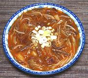

|
Beef & Royal Fern SoupKorea - Yukgaejang | ||||
| Makes: Effort: Sched: DoAhead: |
11 cups *** 45 min Yes |
A substantial, flavorful soup, good for colder weather. It has good Korean character and is not real spicy by Southern California standards. We have a simpler version with bracken fern at Beef & Fern Soup. | |||
|
1 1 ------ 2 1 2-1/2 1 1 1/3 ------ 8 5 5 1-1/2 3 ar 2 ------ |
# # --- cl T T T t t --- oz oz T c oz --- |
Beef (1) pkg Royal Fern (2) -- Flavorings Garlic Chili Powder (3) Chili Paste (4) Soy Sauce Salt Pepper black --------- Onions Scallions Soy Sprouts (5) Sesame Oil (6) Beef Broth Water Starch Noodles (7) -- Garnish Scallions |
Yes, 11 cups is a lot of soup, because I sized it to use a whole 1 pound package of Royal Fern. Feel free to make a half recipe. Prep
|